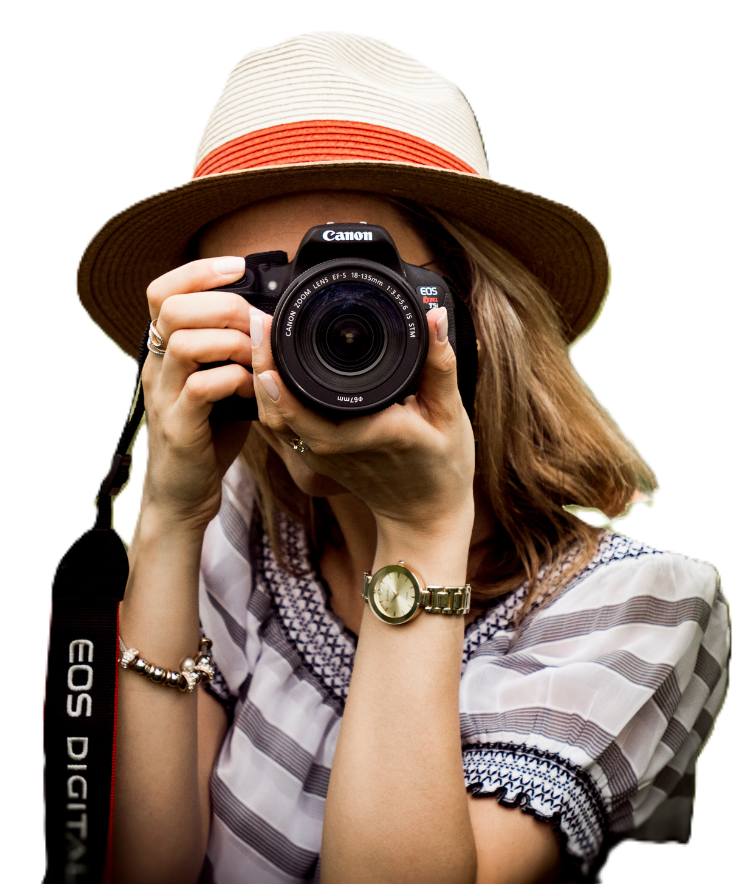

Capture moments. Tell stories with light. Turn your passion for the visual world into a powerful career.

Photography is far more than taking pictures — it's a professional skill combining technical knowledge, artistic vision, and storytelling. Photographers work in fashion, journalism, weddings, wildlife, product advertising, fine art, and more. With the rise of digital media and content creation, demand for skilled photographers has never been higher.
Pro tip: Many successful photographers are self-taught. Practice and a strong portfolio beat any degree in this field.
A single high-profile wedding shoot can earn ₹50,000–₹5,00,000+ depending on your experience and brand.